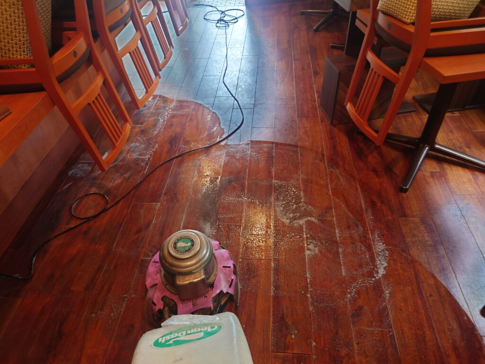
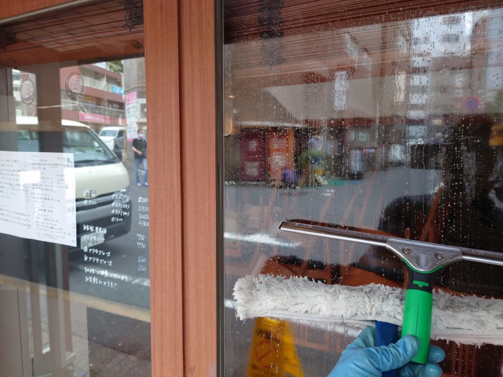
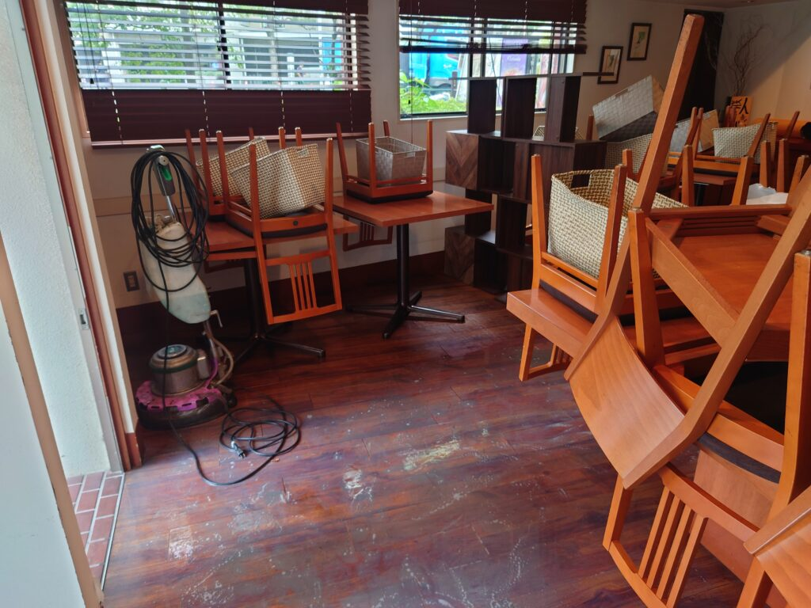
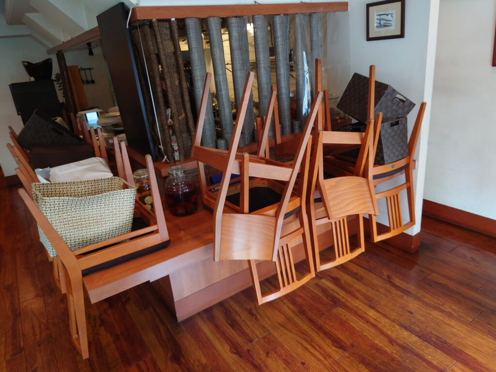
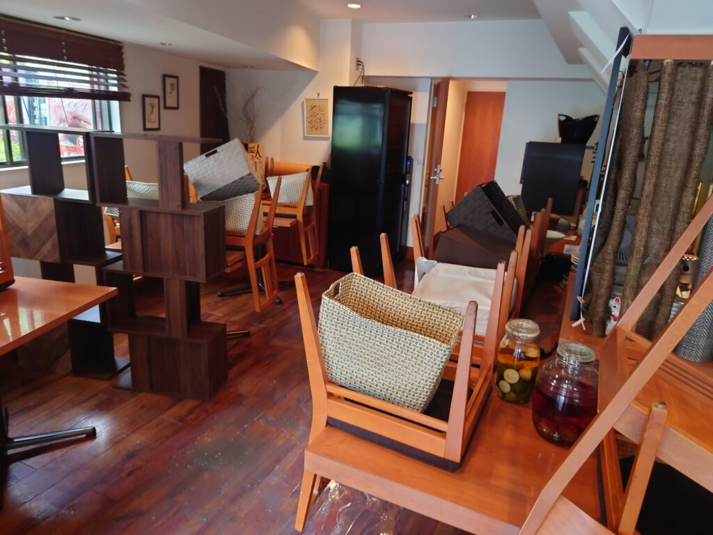
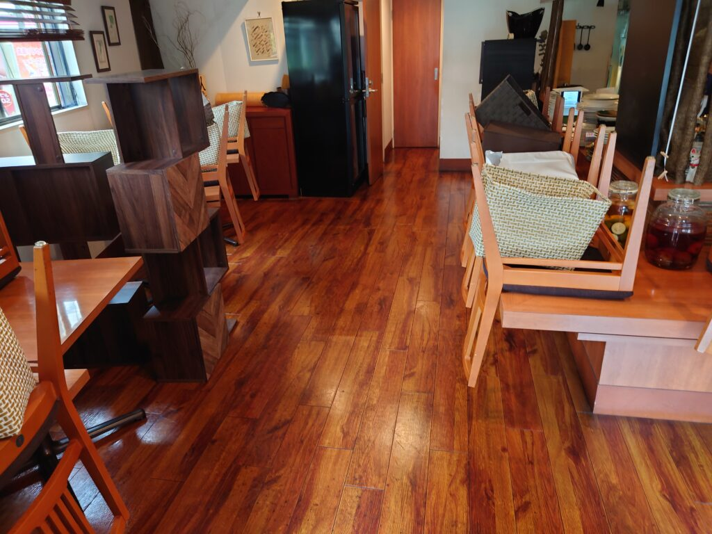

目黒駅前の大変お洒落なフランス料理店様のフローリング床面ポリッシャー洗浄クリーニングワックス仕上げをしました!
目黒駅前とてもお洒落なフランス料理店さんの美しいフローリング床面のポリッシャー洗浄クリーニング、ワックス仕上げをしました。







目黒駅前にある大変お洒落なフランス料理店さんのこれまた大変美しいフローリング床面のクリーニングをしました。料理店様なので、床面ポリッシャー洗浄をしますと真っ黒い汚水が大量に除去出来ました、洗浄したあとには美しい輝きのフローリング床面が現れ、ワックス仕上げでピカピカの大変美しいフローリング床面が完成しました!